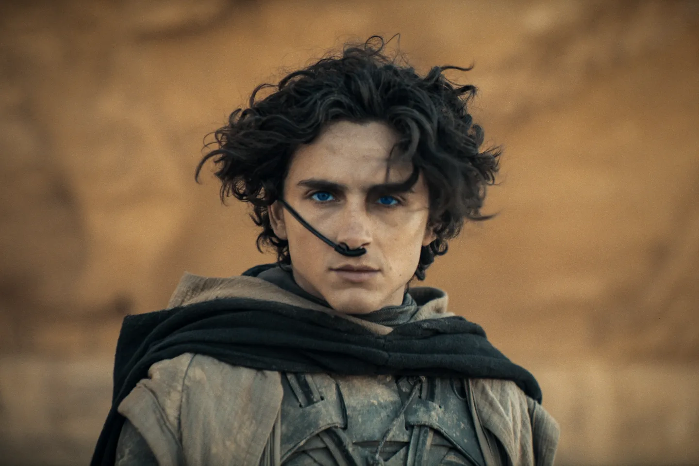

Public Reviews of Dune: Part Two

Critic Reviews from Rotten Tomatoes
The critic score for Dune: Part Two on Rotten Tomatoes is a 92%. This alone shows the high quality of this film considering anything above a 60% is considered good for a rotten tomatoes score. Reviews boast about the immersiveness of the film, the beautiful visuals, and the unmistakable tone that is set. Some critics such as Rebecca Sayce even claim that this movie is unlike any other film they've ever seen. Others like Rua Fay say it is a "Sci-fi masterpiece". The most common compliment to this film among critics is to Villenevue's brilliant direction, as his name is mentioned over 140 times among the 466 review summaries. Overall, the reviews on this film are overwhelmingly positive contributing to the brilliance of this film.

Audience Reviews from Rotten Tomatoes
The audience score is even better for Dune: Part Two coming in at 95%. As a part of the audience I can say that this represents the greatness of this film. Many people love how action-packed this film is and note how great the twists are in the plot. Users like Don H say it is the most visually beautiful film he's ever seen in theaters. Others like Julian say they have watched the film 14 times! Just from reading these audience reviews you can see how much impact this film has had on watchers. Overall, just like the critic reviews you see just how overwhelmingly positive the audience has received this film.